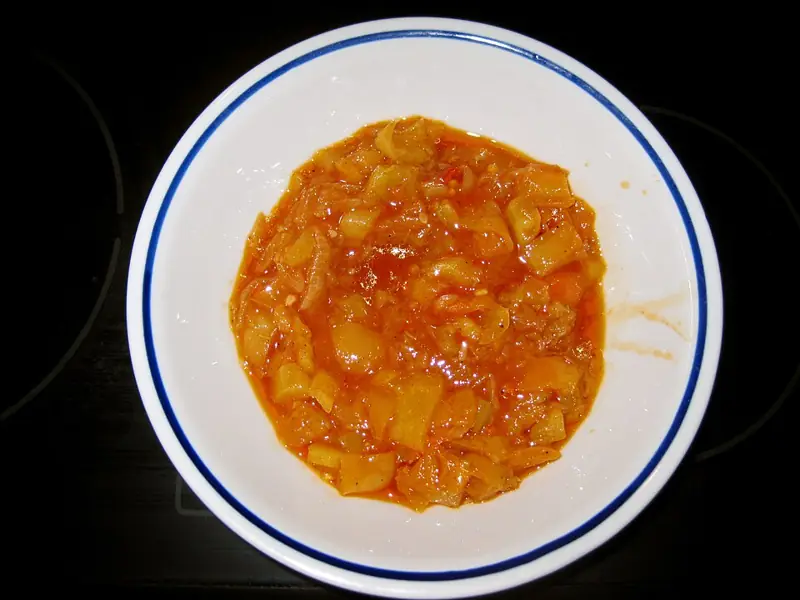

Фото: Top Budapest, CC BY 2.0
.jpg){kind=link}
Лечо из перца и помидоров
Сладкий перец, тушённый с помидорами и луком, как горячее блюдо или гарнир
40 мин4 порц.204 ккал на порциюБ 5 · Ж 10 · У 24Европейская кухня
Продукты на 4 порц.
- Перец болгарский5 шт
- Помидоры5 шт
- Лук репчатый2 шт
- Чеснок2 зуб.
- Растительное масло3 ст. л.
- Сахар2 ч. л.
- Паприка1 ч. л.
- Соль1 ч. л.
- Перец чёрный молотыйпо вкусу
- Петрушка по желаниюпо вкусу
Как готовить
- Нарежьте перец широкими полосками, лук полукольцами. Помидоры натрите на крупной тёрке, кожицу выбросьте.
- Обжарьте лук на масле на среднем огне 5 минут до мягкости.
- Добавьте перец и жарьте 5 минут, помешивая.
- Влейте томатную массу, добавьте сахар, паприку и соль.
- Накройте крышкой и тушите на слабом огне 20 минут, пока перец не станет мягким, но не развалится.
- Добавьте рубленый чеснок и перец, прогрейте 2 минуты. Посыпьте петрушкой.
Совет. Лучше всего лечо получается из красного и жёлтого перца, зелёный даёт горчинку. Хорошо идёт и горячим с рисом, и холодным как закуска.